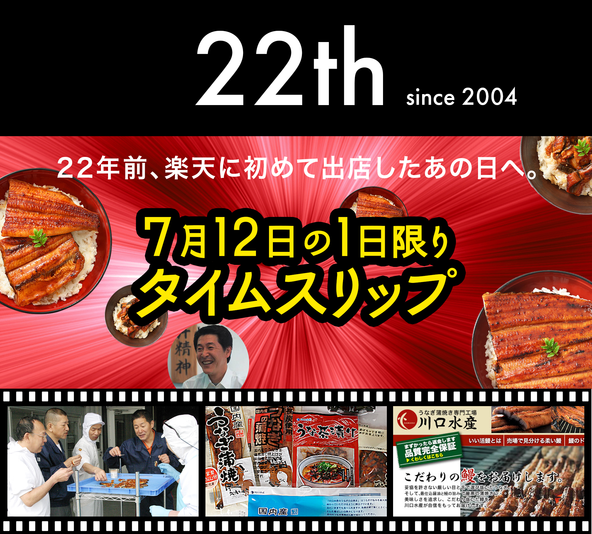
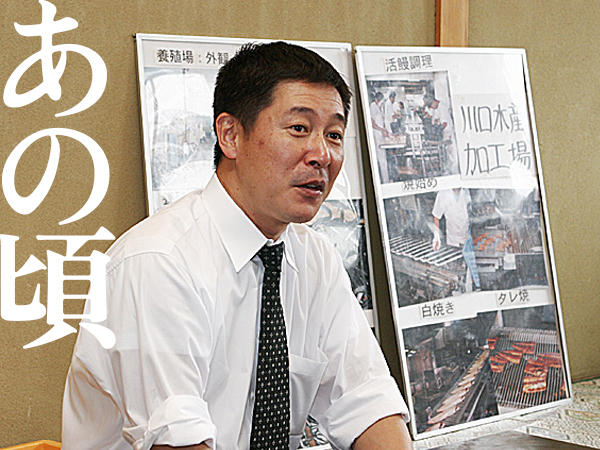
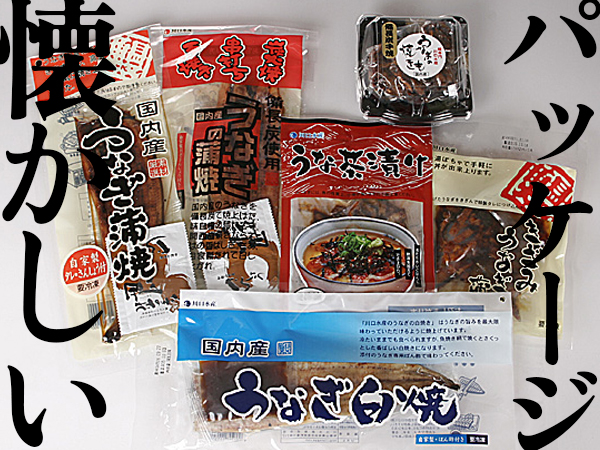
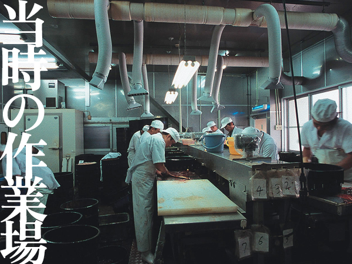
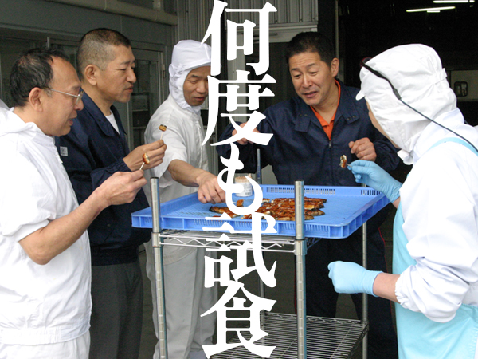
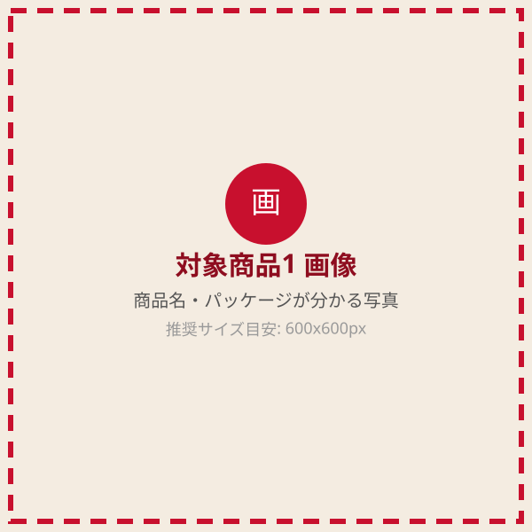
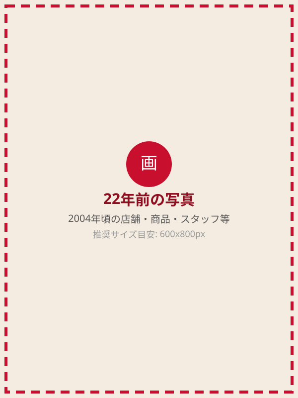
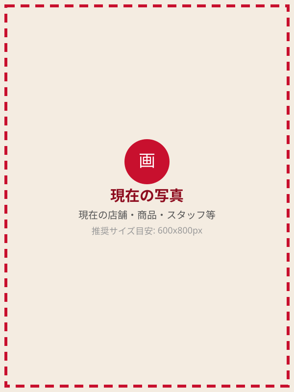

2004年7月12日。
うなぎ屋かわすいが楽天市場に初めて出店した日。
注文が入るたびに喜び、
お客様からいただくレビューに励まされ、
気が付けば22年。
たくさんのお客様に支えていただき、
今年、楽天出店22周年を迎えることができました。
本当にありがとうございます。

うなぎ屋かわすい
楽天出店22周年記念
7月12日限定
感謝の2,200円OFFクーポン
※クーポンの利用条件・対象商品・発行数には制限があります。詳細はページ下部をご確認ください。
2004年7月12日。
うなぎ屋かわすいが楽天市場に初めて出店した日。
注文が入るたびに喜び、
お客様からいただくレビューに励まされ、
気が付けば22年。
たくさんのお客様に支えていただき、
今年、楽天出店22周年を迎えることができました。
本当にありがとうございます。




22周年を迎えるにあたり、最初に考えたのは、
「22年前の価格を復活させよう」
という企画でした。
しかし当時と今では、うなぎの大きさ、セット内容、内容量、送料などが変わっています。
そのため、22年前の価格を正確に再現することはできませんでした。
でも、当時の感謝の気持ちは、今も変わりません。
22周年の"22"にちなんだ
2,200円OFF
クーポンキャンペーン
当時の価格をそのまま再現することはできない。
でも、22年間の感謝の気持ちを、少しでも形にしたい。
そこで今回、22周年の「22」にちなみ、
1日限りで使える2,200円OFFクーポンをご用意しました。
22年間、本当にありがとうございます。
感謝を込めた、7月12日だけの特別企画です。
| 企画名 | うなぎ屋かわすい 楽天出店22周年記念キャンペーン |
|---|---|
| 開催日 | 2026年7月12日限定 |
| 内容 | 対象商品に使える2,200円OFFクーポン配布 |
| 対象商品 | 指定のうなぎ商品 【要編集】対象商品名を具体的にご記入ください |
| 利用条件 | 準備中 【要編集】利用条件(最低利用金額・利用回数等)が決まり次第ご記入ください |
| 注意事項 | クーポンの利用条件・発行枚数の制限・対象商品につきましては、楽天市場のクーポンページをご確認ください。 |



22年の間に、お店も、商品も、時代も変わりました。
それでも変わらないものがあります。
それは、
お客様においしいうなぎを届けたい
という気持ちです。
22年間、本当にありがとうございます。
楽天市場へ出店した当時は、22年後の未来など想像もできませんでした。ここまで続けてこられたのは、いつもご利用くださるお客様のおかげです。
本当は22年前の価格をそのまま再現したかったのですが、当時とは内容量や送料などが変わっており、正確に再現することが難しい状況でした。
それでも、22周年の感謝を少しでも形にしたいと思い、今回2,200円OFFクーポンをご用意しました。
これからも、変わらぬ美味しさと真心をお届けできるよう努めてまいります。今後とも、うなぎ屋かわすいをよろしくお願いいたします。
うなぎ屋かわすい
代表取締役 川口 泰史